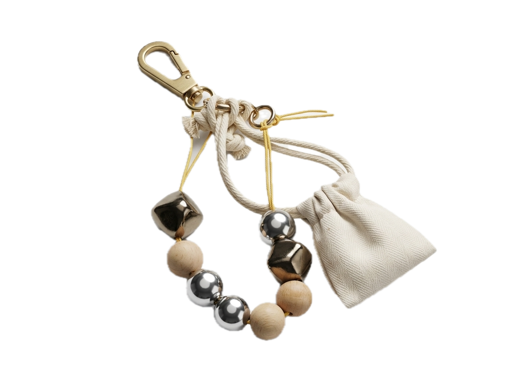

What is DropLoop?
Analog Water Budget Tracker & Haptic Calibration Probe
“Bridging the gap between invisible municipal fluid flow and tangible daily resource rationing through an analog haptic keychain.”
DropLoop is an analog design probe developed to address structural water scarcity in Northern Italy. In modern domestic infrastructure, water arrives under constant municipal pressure—unseen, continuous, and frictionless. Because meters are concealed in basement utility closets and bills arrive months after consumption, citizens lack real-time sensory feedback on the speed of resource depletion.
DropLoop translates continuous, unmetered domestic fluid flow into discreet, physical increments. By shifting beads along a high-friction cord across a tactile split marker, users maintain eyes-free somatic awareness of daily water rationing without digital surveillance, batteries, or mobile screen tethering.
Tactile Architecture & Ratios
One physical bead equals exactly two liters of water, corresponding directly to standard domestic hygiene gestures (e.g. 1 quick 15-second handwash = 1 bead).
A knurled metal or wood split divider cleanly segregates “spent volume” from “remaining budget”. Users can check remaining allowance in a dark bathroom or during busy work routines with a simple thumb slide.
Calibrated for everyday sustainable urban living in Milan and Lombardy, promoting proactive self-rationing (short showers ≤ 4 min, closed taps when lathering).
World Health Organization minimum humanitarian baseline required for health, domestic hydration, and survival during severe municipal drought emergencies.
Why Analog?
Unlike smart digital meters and connected mobile apps that generate notification fatigue, require battery maintenance, and collect private behavioral data, DropLoop relies on pure physical friction. Moving a physical bead requires deliberate tactile engagement, creating a direct physical memory of consumption.